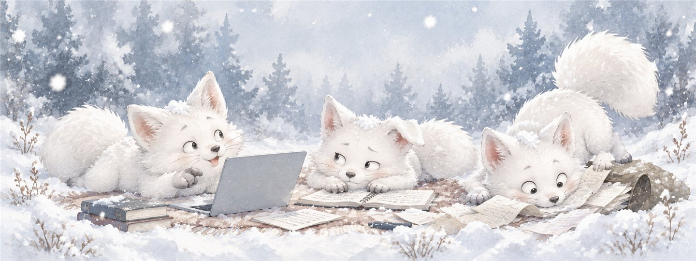
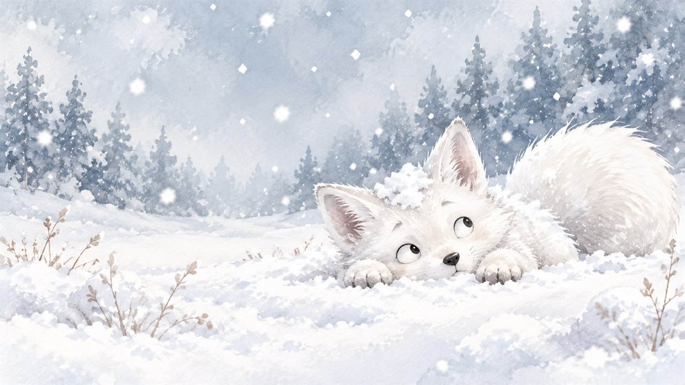

오늘도 뒷공중
셋 다 모르면서
말은 많습니다.
셋이 모였는데 정답은 아직.

야, 너 이거 알아?
ㅋㅋ 아는 척하지 마 인마
잠깐만… 거의 다 찾았어
이새밉의 기록장
잘 모르겠어서 시작했고, 까먹을 것 같아서 적습니다. 해결한 방법만큼 안 됐던 방법도 같이 남깁니다.

오늘도 뒷공중
셋이 모였는데 정답은 아직.

야, 너 이거 알아?
ㅋㅋ 아는 척하지 마 인마
잠깐만… 거의 다 찾았어